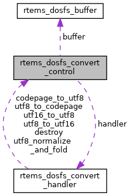

|
RTEMS
5.0.0
|
|
RTEMS
5.0.0
|
FAT filesystem convert control. More...
#include <dosfs.h>

Data Fields | |
| const rtems_dosfs_convert_handler * | handler |
| rtems_dosfs_buffer | buffer |
FAT filesystem convert control.
Short file names are stored in the code page format. Long file names are stored as little-endian UTF-16. The convert control determines the format conversions to and from the POSIX file name strings.
| rtems_dosfs_buffer rtems_dosfs_convert_control::buffer |
| const rtems_dosfs_convert_handler* rtems_dosfs_convert_control::handler |
Definition at line 183 of file dosfs.h.
Referenced by rtems_dosfs_create_default_converter(), rtems_dosfs_create_utf8_converter(), and rtems_dosfs_initialize().
 1.8.17
1.8.17